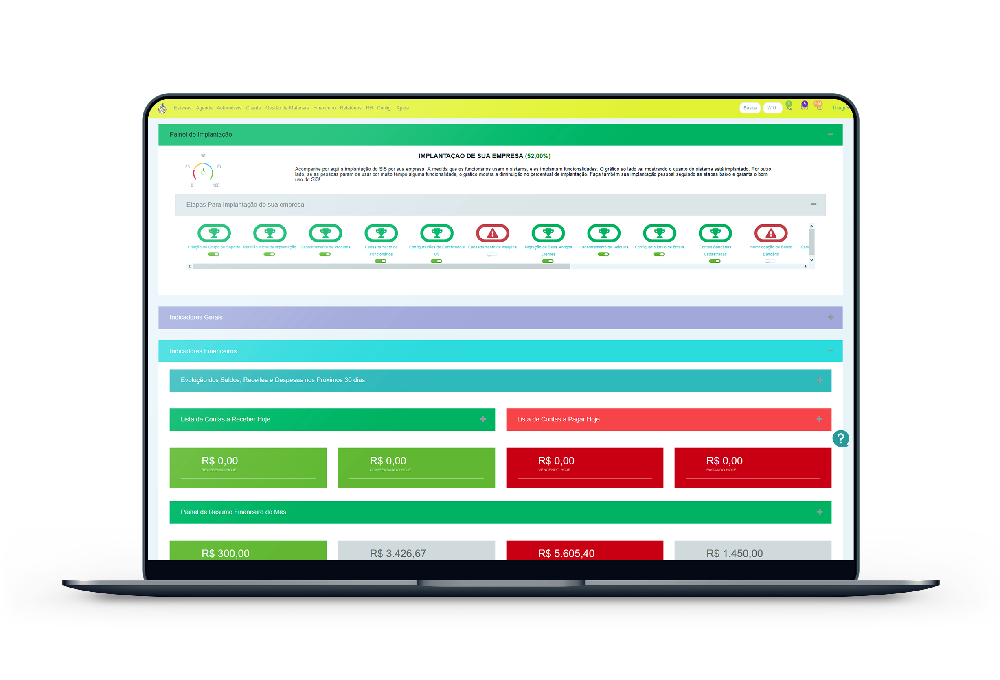
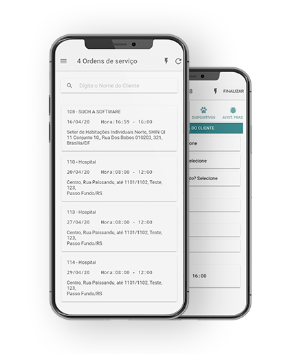

<!--Section: Features v.3-->
<div class="container-fluid team4">
<section class="noMargin" id="products">

    <div class="row pt-2" >
  
      <!--Grid column-->
      <div class="col-lg-5 text-center text-lg-left" id="laptop">
        
      </div>
      <!--Grid column-->
  
      <!--Grid column-->
      <div class="col-lg-7" style="margin-top: 150px;">
        <!--Section heading-->
        <h2 class="h2 py-1 font-weight-bold text-center">SIS Controladoras</h2>
        <!--Section description-->
        <p class="px-5 mb-5 pb-3 lead text-center">O SIS Controladoras é um Software ERP de gestão completo para Empresas
            Controladoras de Pragas. Ele provê desde a prospecção de clientes, até a geração de boletos e notas fiscais e envio de
        emails!</p>
  
        <!--Grid row-->
  
      </div>
      <!--Grid column-->
  
    </div>
    <!--Grid row-->
    <div class="row">
  
      <!--Grid column-->
      <div class="col-lg-7" style="margin-top: 150px;"> 
        <!--Section heading-->
        <h2 class="h2 py-1 font-weight-bold text-center">SIS Mobile 1.0 e 2.0</h2>
        <!--Section description-->
        <p class="px-5 mb-5 pb-3 lead text-center">O Aplicativo SIS Mobile 2.0 registra todos os dados operacionais dos
            técnicos das empresas Controladoras de Pragas, e tudo é feito de forma offline, salvo de forma local, e sincronizado 
            de volta para o Sistema Web ao retornar à empresa!
        </p>
        <div style="text-align: center;">
          <button mdbBtn type="button" class="rounded-pill morpheus-den-gradient" style="color: white;" mdbWavesEffect>Testar Grátis</button>
        </div>
  
      </div>
      <!--Grid column-->
      <!--Grid column-->
      <div class="col-lg-5 text-center text-lg-left">
        
      </div>
      <!--Grid column-->
  
    </div>
    <!--Grid row-->
  
  </section>
</div>
  <!--Section: Features v.3-->